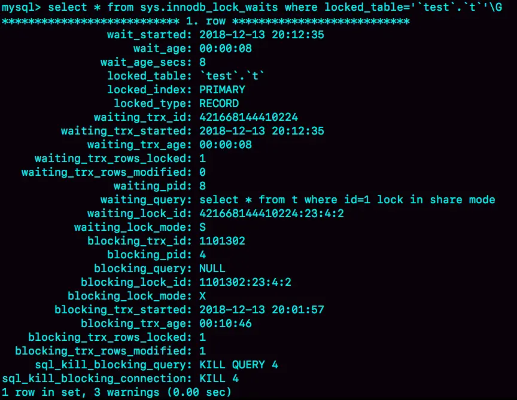

MySQL - 诊断锁的方法
等MDL锁
下面语句长时间不返回，被锁住了：
select * from t where id=1;
先用show processlist查看：

可以看到Waiting for table metadata lock，但是没法看到另一个线程在干什么，值看到Command是Sleep。
MySQL启动时设置performance_schema=on，相比于设置为 off 会有 10% 左右的性能损失，然后：
select blocking_pid from sys.schema_table_lock_waits;
找到造成阻塞的process id，把这个连接用 kill 命令断开即可。
等flush
下面语句长时间不返回：
select * from t where id=1;
用select * from information_schema.processlist where id=?;查看：
看到状态是Waiting for table flush，表示的是现在有一个线程正要对表 t 做 flush 操作。MySQL 里面对表做 flush 操作的用法，一般有以下两个：
flush tables t with read lock;
flush tables with read lock;
注意，这都是读锁，应该是不会阻塞我们的SQL的，除非它们也被别的线程堵住了。
我们用show processlist查看：
select sleep(1) from t把表t打开，但是flush table ...需要把表t关闭，于是就这么阻塞了。
等行锁
下列语句对某行记录添加了读锁：
select * from t where id=1 lock in share mode;
如果此时这行记录上已经持有了一个写锁，这条sql就会阻塞，比如：
但是show processlist看不出来：
所以要通过sys.innodb_lock_waits查询谁占着写锁：
select * from sys.innodb_lock_waits where locked_table='`test`.`t`';
得到结果：

可以看到，4 号线程是造成堵塞的罪魁祸首，干掉它的方式 KILL QUERY 4 或 KILL 4。
其实KILL QUERY 4是不对的，因为update语句已经执行完毕了，只是事务没有提交，这也是为什么blocking_query: NULL的原因。
死锁
show engine innodb status
看LATESTDETECTED DEADLOCK小节，就是记录的最后一次死锁信息：
我们来看看这图中的几个关键信息：
- 这个结果分成三部分：
- (1) TRANSACTION，是第一个事务的信息；
- (2) TRANSACTION，是第二个事务的信息；
- WE ROLL BACK TRANSACTION (1)，是最终的处理结果，表示回滚了第一个事务。
- 第一个事务的信息中：
- WAITING FOR THIS LOCK TO BE GRANTED，表示的是这个事务在等待的锁信息；
- index c of table
test.t，说明在等的是表 t 的索引 c 上面的锁； - lock mode S waiting 表示这个语句要自己加一个读锁，当前的状态是等待中；
- Record lock 说明这是一个记录锁；
- n_fields 2 表示这个记录是两列，也就是字段 c 和主键字段 id；
- 0: len 4; hex 0000000a; asc ;; 是第一个字段，也就是 c。值是十六进制 a，也就是 10；
- 1: len 4; hex 0000000a; asc ;; 是第二个字段，也就是主键 id，值也是 10；
- 这两行里面的 asc 表示的是，接下来要打印出值里面的“可打印字符”，但 10 不是可打印字符，因此就显示空格。
- 第一个事务信息就只显示出了等锁的状态，在等待 (c=10,id=10) 这一行的锁。
- 当然你是知道的，既然出现死锁了，就表示这个事务也占有别的锁，但是没有显示出来。别着急，我们从第二个事务的信息中推导出来。
- 第二个事务显示的信息要多一些：
- “ HOLDS THE LOCK(S)”用来显示这个事务持有哪些锁；
- index c of table
test.t表示锁是在表 t 的索引 c 上； - hex 0000000a 和 hex 00000014 表示这个事务持有 c=10 和 c=20 这两个记录锁；
- WAITING FOR THIS LOCK TO BE GRANTED，表示在等 (c=5,id=5) 这个记录锁。
从上面这些信息中，我们就知道：
- “lock in share mode”的这条语句，持有 c=5 的记录锁，在等 c=10 的锁；
- “for update”这个语句，持有 c=20 和 c=10 的记录锁，在等 c=5 的记录锁。
因此导致了死锁。这里，我们可以得到两个结论：
- 由于锁是一个个加的，要避免死锁，对同一组资源，要按照尽量相同的顺序访问；
- 在发生死锁的时刻，for update 这条语句占有的资源更多，回滚成本更大，所以 InnoDB 选择了回滚成本更小的 lock in share mode 语句，来回滚。
快捷SQL
查慢SQL（慢于5秒）：
select COMMAND, TIME, STATE, substr(INFO, 1, 100), length(INFO) from information_schema.processlist
where
COMMAND<>'Sleep'
and db='<db>'
and TIME >= 5
order by TIME desc limit 10;
查行锁：
select * from sys.innodb_lock_waits where locked_table like '`<db>`.%';
查行锁+Block Pid正在执行的SQL：
select
w.wait_started, w.wait_age_secs, w.locked_table, w.locked_index, w.locked_type,
w.waiting_pid, substr(wp.INFO, 1, 100) waiting_query,
w.blocking_pid, w.blocking_query, w.blocking_trx_started, w.blocking_trx_age,
substr(bp.INFO, 1, 100) blocking_query
from sys.innodb_lock_waits w
join information_schema.processlist bp on bp.ID=w.blocking_pid
join information_schema.processlist wp on wp.ID=w.waiting_pid
where
w.locked_table like '`<db>`.%';